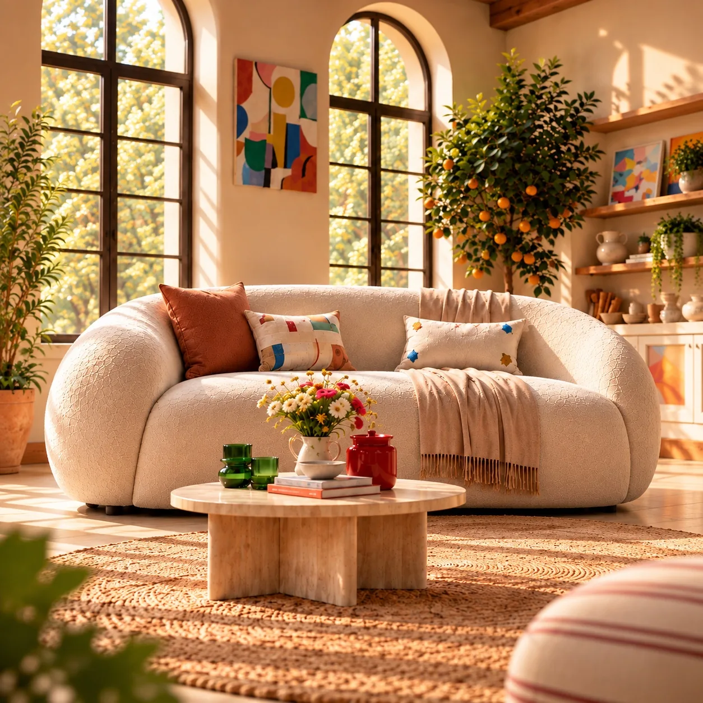
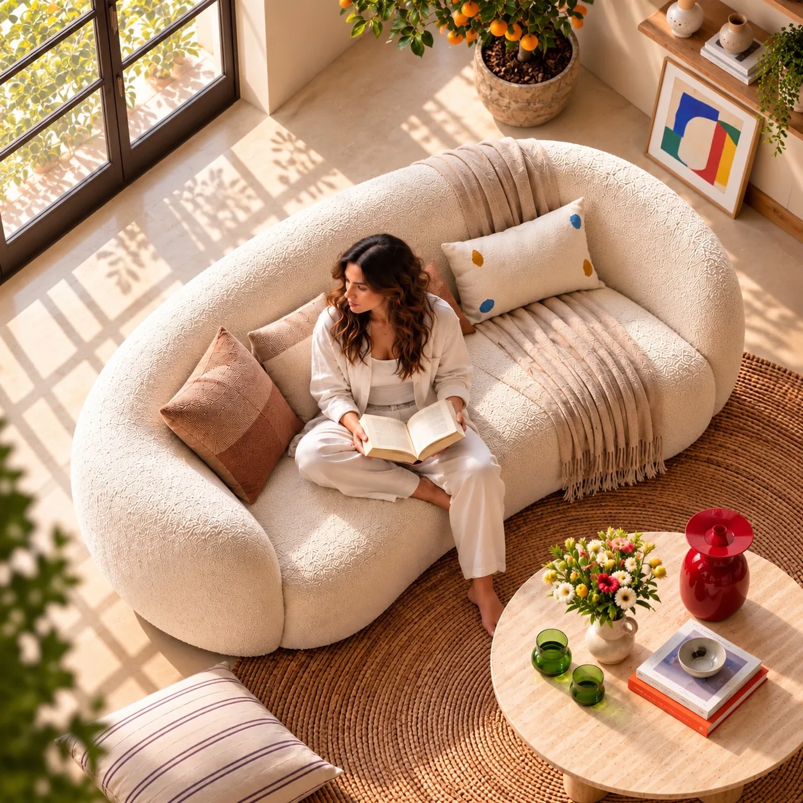

Mobilya / BAĞIMSIZ KONSEPT ÇALIŞMA
Yaşanan Bir Konfor
Kavisli bir koltuğun formunu, kullanım hissini ve kumaş dokusunu sıcak bir yaşam alanında anlatan görsel hikâye.

PROJE FİLMİ
Konforu hareketle hissettir.
Yaklaşık 15 saniyelik tanıtım videosu. Oynatma ve ses kontrolü sizde.
GÖRSEL SERİ
Aynı ürün, farklı bakışlar.



BİRLİKTE ÜRETELİM
Sizin ürününüz için nasıl bir hikâye kurabiliriz?
Bağımsız konsept çalışma · Marka iş birliği değildir.